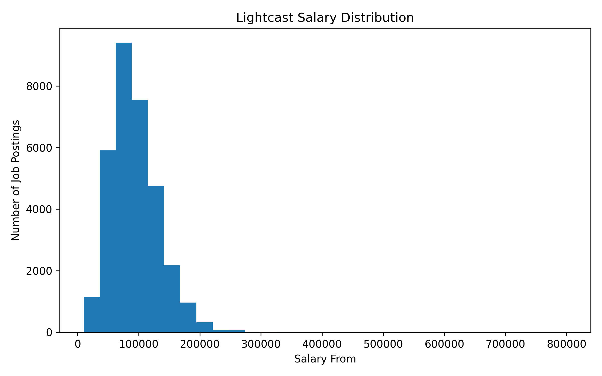
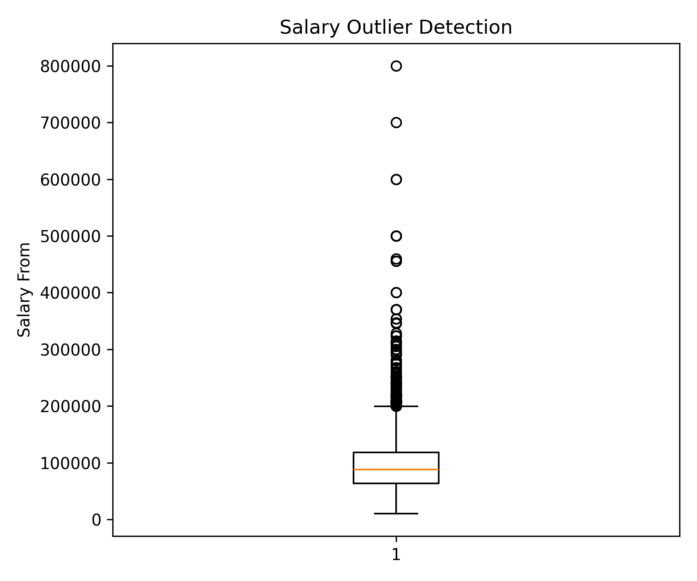
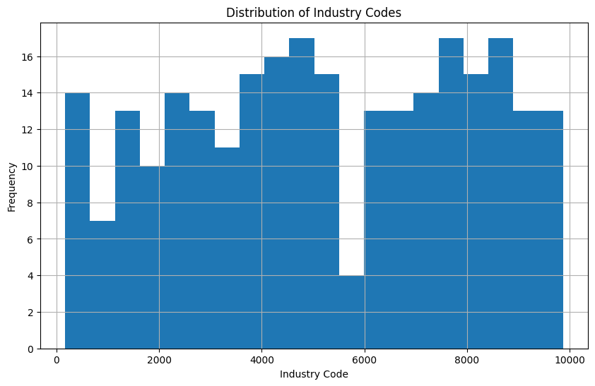
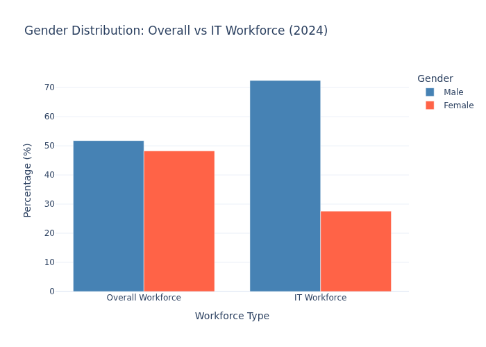
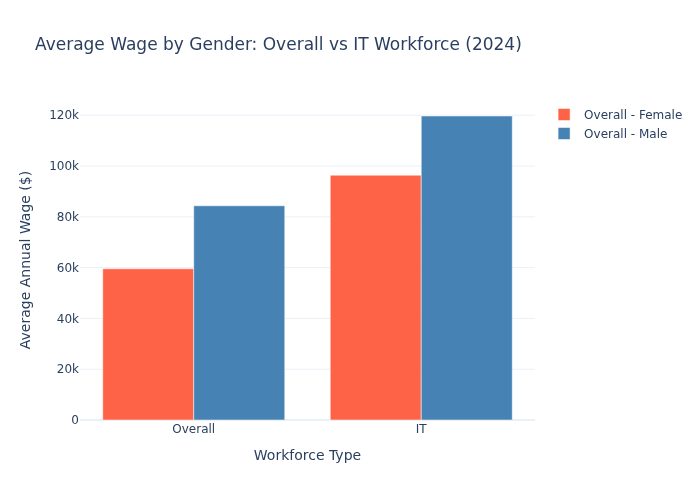
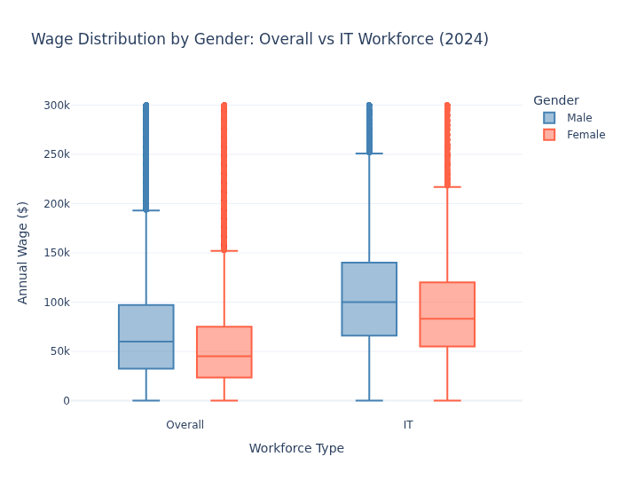
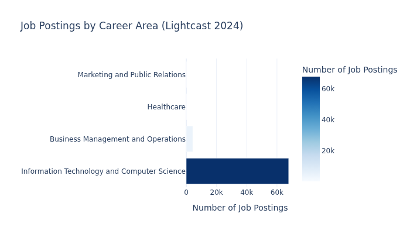

Exploratory Data Analysis of the 2024 Lightcast job postings and IPUMS employment datasets.
Alina: Salary Analysis from Lightcast
This section analyzes salary information from Lightcast job postings. The salary table contains 72,498 job postings, but only 32,398 postings include salary information, meaning approximately 55.3% of postings do not disclose salary fields.

The salary distribution shows that most postings with disclosed salary information cluster below the highest-paying outliers. The median lower-bound salary is approximately $88,000, while the mean is about $94,005, suggesting a right-skewed distribution.

The boxplot confirms that salary postings contain substantial high-end outliers. This suggests that salary transparency and compensation levels vary widely across job postings and occupational categories.
Alina: IPUMS Industry Distribution Analysis
The IPUMS dataset contains 264 industry categories.

The histogram illustrates the distribution of industry codes across the lookup table.
Julie: Female Wage vs Job Market Activity (Cross-Dataset)
Setup
from analysis.utils import build_cross_statecross = build_cross_state(df_emp, df_jobs_state)r_f = cross[cross["SEX_LABEL"]=="Female"]["AVG_WAGE"].corr(cross[cross["SEX_LABEL"]=="Female"]["POSTING_COUNT"])r_m = cross[cross["SEX_LABEL"]=="Male"]["AVG_WAGE"].corr(cross[cross["SEX_LABEL"]=="Male"]["POSTING_COUNT"])print(f"States: {cross['STATE_CODE'].nunique()} | r Female={r_f:.3f} | r Male={r_m:.3f}")
States: 51 | r Female=0.396 | r Male=0.411
C1 — Wage vs Job Posting Volume by State and Sex
fig_c1 = px.scatter( cross, x="POSTING_COUNT", y="AVG_WAGE", color="SEX_LABEL", facet_col="SEX_LABEL", hover_name="STATE_CODE", hover_data={"STATE_CODE": False, "POSTING_COUNT": True, "AVG_WAGE": ":.0f"}, title="Avg Wage vs Job Posting Volume by State — Female vs Male", labels={"POSTING_COUNT": "Job Postings (Lightcast)","AVG_WAGE": "Avg Wage (IPUMS)","SEX_LABEL": "Sex" },**PLOTLY_THEME)fig_c1.update_traces(marker=dict(size=8), selector=dict(mode="markers"))save_fig(fig_c1, "julie_cross_state_comparison")fig_c1.show()
Saved: julie_cross_state_comparison.html + .png
Antara: Gender Disparities in IT vs Overall Workforce (IPUMS & Lightcast)
This section analyzes gender representation and wage disparities between the overall workforce and the IT workforce, using IPUMS 2024 employment data and Lightcast 2024 job postings.
Gender Distribution: Overall vs IT Workforce
The IT workforce is significantly male-dominated compared to the overall workforce. While the overall workforce is nearly balanced at 51.8% male and 48.2% female, the IT workforce skews heavily male at 72.4%, with women representing only 27.6% of IT workers.

Average Wage by Gender: Overall vs IT Workforce
Both the overall and IT workforces show a clear gender wage gap. In the overall workforce, women earn an average of $59,562 compared to $84,342 for men — a gap of $24,780. In the IT workforce, women earn $96,398 compared to $119,699 for men — a gap of $23,301. While IT offers higher wages for both genders, the wage gap persists.

Wage Distribution by Gender: Overall vs IT Workforce
The box plots reveal that the IT workforce has a higher median wage for both genders compared to the overall workforce. However, the gap between male and female median wages remains visible in both groups, with males consistently earning more across all quartiles.

Job Postings by Career Area (Lightcast 2024)
The Lightcast dataset shows that 93% of job postings fall under Information Technology and Computer Science, reinforcing the IT focus of the dataset. Business Management and Operations accounts for 6% of postings.

Job Postings by Occupation Group (Lightcast 2024)
Within IT, Data Analysis and Mathematics and Business Intelligence are the two dominant occupation groups, each with approximately 30,000 postings. This suggests high demand for data-related roles in the current job market.